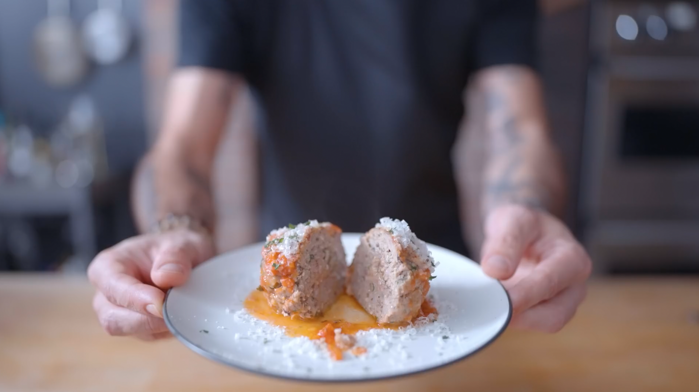

Odin's 30 Rock Imitation Meatballs

Description:
This is Odin's rendition of Binging with Babish's 30 Rock Meatballs
Ingredients:
- 4 slices (~120 g) white bread, crusts removed, torn into pieces
- ½ Cup buttermilk
- 1 Tbsp heavy cream
- ¼ onion, roughly chopped
- 3 cloves garlic, roughly chopped
- 2 oz pine nuts
- 4 oz uncured pancetta, cubed
- 1 ½ oz dried currants
- And a bunch more stuff!
- Step 1
Preheat the oven to 425 °F with convection fan on (or 450 °F without convection).
- Step 2
Combine the white bread, buttermilk, and heavy cream in a large metal bowl. Stir to combine the mixture until a homogenous paste-like batter forms.
- Step 3
Preheat a large high-walled skillet over medium heat. Add the onion and cook until lightly caramelized, about 5 minutes.
- Step 4
Turn off the heat and add the garlic and pinenuts to the pan. Toss to combine, then set aside to cool.
- Step 5
A bunch more steps!